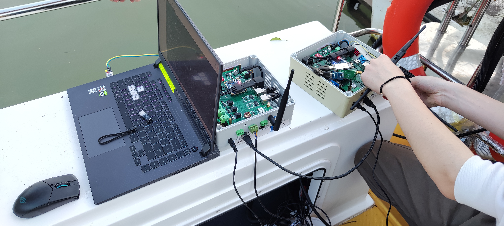

我们的人生需要别人鼓掌，这样的我们会更自信，步伐更轻松矫健。生活中，团队亦是如此。团队正能量的传染力就像磁场，可以向外辐射积极和乐观。任何事情，正能量的团队会将其做的漂亮而华彩;相反负能量的团队，碰到的则是重重山峦和荆棘，态度不同，带来的结果不同。
积极、豁达、从容、乐观、朴素、简单、宽容、善良......这些都是生命的团队正能量，当你调整心态，用昂扬积极的姿态迎接初升的太阳，拥有团队正能量的你就是自信、值得信赖的，用自己的洒脱和热情影响身边的人和事，将会给团队带去不一样的工作灵感。团队正能量帮你建立了良好的人际关系，你也能用自己的团队正能量去塑造一个良好的氛围，这是你拥有的无形的巨大财富。

学习中，我们需要团队正能量来不断激励自己。尽管有时辛苦，有时沮丧，但我们不得不承认，工作是实现自身价值的一个重要方面。而如何在工作中最大限度发挥自我的团队正能量，实现自身价值，需要我们在工作中体会。有些工作看似不起眼，却需要时刻紧绷神经，花费大量时间和精力完成，不能耽误，更不能有任何差错。压力固然有，责任也很重大。正因为如此，就更需要自己抱着如履薄冰的紧迫感和使命感，不断学习业务知识，不断总结工作规律，不断向自己提出更高的要求。只有抱着这样的态度，才能促使自己进步。这中间必定经历压力与挑战，如果把工作的压力和挫折转变成负能量，经常抱怨，越说心情越差，负面情绪堆积最终会爆发，负能量蔓延甚至影响到同学，乃至团队，如同病毒传播一样。团队在时间及负能量的堆积下会顷刻崩塌，溃不能行，这必定影响到整个实验室发展。但如果换个视角，当看到自己的劳动收获成果，看到工作任务圆满完成，看到每点每滴不易取得，会更加激励自己以昂扬的斗志，饱满的热情去迎接更大的挑战。我想，这就是团队正能量来激励自己更好工作的过程吧。

人心中的“能量场”存在着正、负两种能量，当团队正能量不断被激发时，负面情绪会逐渐被取代，幸福感也会慢慢增加。在学习中，重视用积极的心态调整自己，摒弃负面的思想，远离消极、坚持正能量持之以恒，还有什么困难会困扰我们呢?每天给他人一个微笑、一次握手、一个拥抱，传递的便是快乐和积极，发送一条温馨、积极向上的微信，也是向他人传递有价值的正能量，并促使实验室风气向着积极健康的方向前行。只有我们人人学会坚持团队正能量，我们的团队才会更加强大，我们才会驭风而起，展翅飞翔!